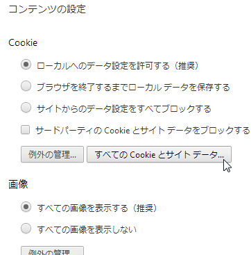

重複チェックをfilterで行う
フィルター関数を使えば簡単に重複削除や重複値の抽出ができる。
主なコード
var ary1 = [4,2,3,3,2,2,7,8,88,88];
// 重複を削除したリスト
var ary2 = ary1.filter(function (v, i, ary) {
return ary.indexOf(v) === i;
});
// 重複値（同値あり）のリストを取得
var ary3 = ary1.filter(function (v, i, ary) {
return ary.indexOf(v) !== ary.lastIndexOf(v);
});
// 重複値のリスト
var ary4 = ary1.filter(function (v, i, ary) {
return ary.indexOf(v) === i && i !== ary.lastIndexOf(v);
});
出力
重複を削除したリスト 4,2,3,7,8,88 重複値（同値あり）のリストを取得 2,3,3,2,2,88,88 重複値のリスト 2,3,88 重複値（同値あり）と 重複要素番号 2,3,3,2,2,88,88 1,2,3,4,5,8,9
サンプルソース
<!DOCTYPE html>
<html lang="ja">
<head>
<meta charset="UTF-8">
<meta name="google" content="notranslate" />
<title>重複チェックをfilterで行う</title>
<link rel="stylesheet" type="text/css" href="common1.css" />
<script src="jquery-1.11.1.min.js"></script>
<script>
$(document).ready(function(){
var ary1 = [4,2,3,3,2,2,7,8,88,88];
// 重複を削除したリスト
var ary2 = ary1.filter(function (v, i, ary) {
return ary.indexOf(v) === i;
});
// 重複値（同値あり）のリストを取得
var ary3 = ary1.filter(function (v, i, ary) {
return ary.indexOf(v) !== ary.lastIndexOf(v);
});
// 重複値のリスト
var ary4 = ary1.filter(function (v, i, ary) {
return ary.indexOf(v) === i && i !== ary.lastIndexOf(v);
});
// 重複要素番号のリスト
var indexs5=[];
var ary5 = ary1.filter(function (v, i, ary) {
if(ary.indexOf(v) !== ary.lastIndexOf(v)){
indexs5.push(i);
return true;
}else{
return false;
}
});
$("#ary1").html(ary1.join(","));
$("#ary2").html(ary2.join(","));
$("#ary3").html(ary3.join(","));
$("#ary4").html(ary4.join(","));
$("#ary5").html(ary5.join(","));
$("#indexs5").html(indexs5.join(","));
});
</script>
<style type="text/css">
</style>
</head>
<body>
<div id="page1">
<h1 id="header">重複チェックをfilterで行う</h1>
<div class="container" >
<div class="sec1">
<div>フィルター前</div>
<div id="secry1"></div>
<hr>
<div>重複を削除したリスト</div>
<div id="secry2"></div><br>
<div>重複値（同値あり）のリストを取得</div>
<div id="secry3"></div><br>
<div>重複値のリスト</div>
<div id="secry4"></div><br>
<div>重複値（同値あり）と
重複要素番号</div>
<div id="secry5"></div>
<div id="indexs5"></div>
</div><!-- sec1 -->
</div><!-- content -->
<div id="footer">(C) kenji uehara 2014/08/05</div>
</div><!-- page1 -->
</body>
</html>
サンプル
参照元サイト
JSON文字列化とパース
配列をJSON文字列にするにはJSON.stringifyを使います。
var data=[[1,'neko',99],[2,'nezumi',99],[3,'usi',20],[3,'usi',99],[4,'tora',20]]; //★配列またはObjectをJSON文字列化する。 var json_str = JSON.stringify(data); //出力例：json_str→[[1,"neko",99],[2,"nezumi",99],[3,"usi",20],[3,"usi",99],[4,"tora",20]] //★JSON文字列をパースする。 var data2 = JSON.parse(json_str);//※オブジェクトに戻す場合
参考 PHPの覚書 JSON変換
JSON文字列をHTMLに埋め込む場合の注意点
JSON文字列はdiv要素などではなく、input要素に埋め込んだ方がよい。通常のdiv要素やspan要素だと、「< >」記号がJSONに含まれている場合に不具合が生じるからである。
jQueryの.html()メソッドでJSON文字列を取得する際、「< >」記号がJSON文字列中に存在するとバグが生じる。
inputにJSONを埋め込む例
<input id="json1" type="hidden" value=[JSON文字列] style="display:none" />
2次元配列の行列を入替
2次元配列の行列を入れ替える関数
var data=[[1,'neko',99],[2,'nezumi',99],[3,'usi',20],[3,'usi',99],[4,'tora',20],];
//★行列変換
var data2=transpose(data);
//★2次元配列の行列入替
function transpose(a) {
return Object.keys(a[0]).map(function (c) {
return a.map(function (r) {
return r[c];
});
});
}
サンプルソース
<!DOCTYPE html>
<html lang="ja">
<head>
<meta charset="UTF-8">
<meta name="google" content="notranslate" />
<title>2次元配列の行列を入替</title>
<link rel="stylesheet" type="text/css" href="common1.css" />
<script src="jquery-1.11.1.min.js"></script>
<script>
$(document).ready(function(){
var data=[[1,'neko',99],[2,'nezumi',99],[3,'usi',20],[3,'usi',99],[4,'tora',20],];
//★行列変換
var data2=transpose(data);
//出力用
var json_text1 = JSON.stringify(data);
var json_text2 = JSON.stringify(data2);
$("#ary1").html(json_text1);
$("#ary2").html(json_text2);
});
//★2次元配列の行列入替(nullはエラーになるので注意)
function transpose(a) {
return Object.keys(a[0]).map(function (c) {
return a.map(function (r) {
return r[c];
});
});
}
</script>
<style type="text/css">
</style>
</head>
<body>
<div id="page1">
<h1 id="header">2次元配列の行列を入替</h1>
<div class="container" >
<div class="sec1">
<div>変換前</div>
<div id="secry1"></div>
<hr>
<div>行列入替後</div>
<div id="secry2"></div><br>
</div><!-- sec1 -->
</div><!-- content -->
<div id="footer">(C) kenji uehara 2014/08/05</div>
</div><!-- page1 -->
</body>
</html>
サンプル参照元サイト
2次元配列の重複チェック
サンプルを動かすサンプル
$(document).ready(function(){
var data=[[1,'neko',99],[2,'usi',99],[3,'usi',20],[3,'usi',99],[4,'tora',20],];
var clm_no=2;//重複チェックする列番号
//★2次元配列の重複チェック
var rtns=overlapChkForMatrix(data,clm_no);
//出力値は重複行番号と重複値 → {"0":99,"2":20}
console.dir(rtns);//デバッグ出力
});
/**
*重複チェック（2次元配列用）
* @param data 2次元配列
* @param clmNo チェックする列番号
* @param type 返値タイプ 0:重複情報オブジェクト 1:重複値配列
* @return 重複情報オブジェクトか重複値配列
*
*/
function overlapChkForMatrix(data,clmNo,type){
if(data =='' || data==null || !(data instanceof Array)){
return null;
}
if(data.length==0){
return null;
}
var data2=transpose(data);//行列変換
var ary1=data2[clmNo];//チェック対象列の配列を取得
var rtns={};//重複情報
//重複フィルター処理
var overlap_vals = ary1.filter(function (v, i, ary) {
if(ary.indexOf(v) === i && i !== ary.lastIndexOf(v)){
//重複情報をセット
rtns[i]=v;
return true;
}else{
return false;
}
});
if(type==1){
return overlap_vals;
}else{
return rtns;
}
}
//2次元配列の行列入替(nullはエラーになるので注意)
function transpose(a) {
return Object.keys(a[0]).map(function (c) {
return a.map(function (r) {
return r[c];
});
});
}
サブミットのキャンセルと注意点
formタグ内に「onsubmit="return false;"」。サンプル
<script>
function check(){
alert('test');
return false;
}
</script>
<form action="/dummy" onsubmit="return check();" >
～略～
<input type="submit" value="送信"/>
</form>
×間違いやすいもの。returnがない。
<form action="/dummy" onsubmit="check();" >
～略～
<input type="submit" value="送信"/>
</form>
×間違いやすいもの。submitボタンに記述
<form action="/dummy" " >
～略～
<input type="submit" value="送信" onsubmit="return check();/>
</form>
連想配列から最初のキーを取得
ループを使うしかない？
/**
* 連想配列から最初のキーを取得
* @param obj 連想配列（オブジェクト）
*/
function getFirstKey(obj){
for(key in obj ){
return key;
}
}
Chromeでクッキーを調べる方法
クッキーだけでなくローカルストレージも調べられる。調べる方法は以下の通り。
Chromeのメニュー→設定→詳細設定を表示→プライバシー：コンテンツの設定ボタン→ 「すべてのCookieとサイトデータ」ボタン
以下は詳細な手順。
-
Chromeブラウザのメニューを開く
-
設定をクリック
-
詳細設定を表示する
-
プライバシーのコンテンツ設定を開く
-
「すべてのCookieとサイトデータ」ボタン押す。
 -
サイトごとのクッキー情報一覧が表示される。調べたいサイトのクッキーをクリック。
-
変数が陳列しているので調べたい変数をクリック。
-
クッキーの詳細情報が表示される。削除もできる。
連想配列（オブジェクト）の要素数を取得する方法
以下のコードで取得できる。var len=Object.keys(連想配列).length;
ちなみに連想配列とオブジェクトはJavaScriptでは同じものである。
ソースコード
var data={
0:{aof:'success',send_dt:'2012/12/12'},
1:{aof:'success',send_dt:'2012/12/13'},
2:{aof:'fail',send_dt:'2012/12/14'},
3:{aof:'success',send_dt:'2012/12/15'},
};
//要素数
var len=Object.keys(data).length;
//※ len=4
async属性の挙動実験 <script async>
実験
async属性を指定して読込順の実験。<script src="../../style2/js/jquery-1.11.1.min.js" async></script> <script src="../../style2/js/bootstrap.min.js" async></script> <script src="elephant.js" async></script> <script src="neko.js" async></script>
ファイル内容
console.log('elephant.js');
var a=0;
a=a+1;
a=a+1;
a=a+1;
～ 略 ～
a=a+1;
a=a+1;
console.log('Elephant='+a);//←16388行目
console.log('neko.js');
ファイルの大きさ
| JSファイル名 | サイズ(Byte) |
|---|---|
| jquery-1.11.1.min.js | 95788 |
| bootstrap.min.js | 31819 |
| elephant.js | 130000 |
| neko.js | 100 |
結果
F5キーなどでリロードを繰り返すと、コンソールで出力される値の順番が変わることがある。先にjqueryよりもbootstrap.min.jsが先に読み込まれエラーになることもあった。
以下は出力の例。F5を何度か押すと出力パターンが変化する。
出力パターン1
出力パターン2
出力パターン3

Chromeで検証
F12 → consoleタブ
サンプル